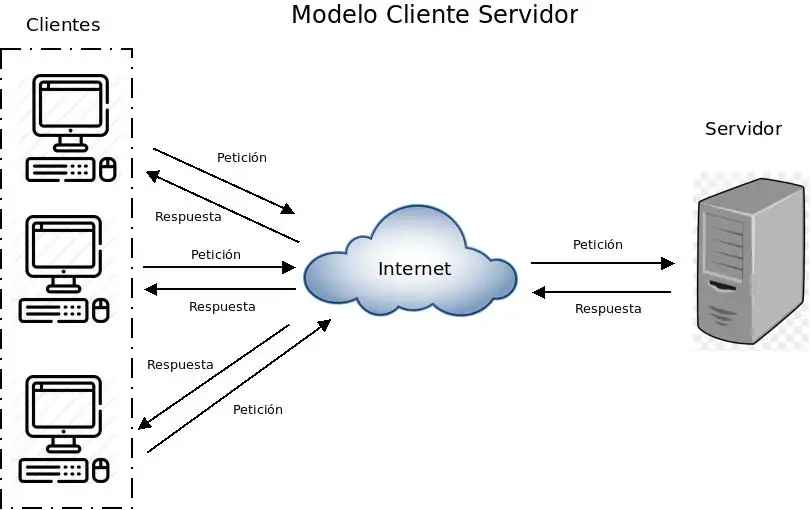

Bloque 1. Aplicaciones web
1. ¿Qué es una aplicación web?
Una aplicación web es un programa informático al que accedemos a través de un navegador web utilizando una red, normalmente Internet o una intranet.
A diferencia de las aplicaciones de escritorio, no es necesario instalar la aplicación completa en el equipo del usuario. Gran parte del procesamiento se realiza en uno o varios servidores remotos.
Son ejemplos de aplicaciones web:
- Moodle
- Nextcloud
- WordPress
- phpMyAdmin
- GitLab
Cuando utilizamos cualquiera de estas aplicaciones, nuestro navegador intercambia información con uno o varios servidores que procesan las peticiones y generan las respuestas.
2. Arquitectura cliente-servidor
La mayoría de los servicios que utilizamos diariamente funcionan siguiendo una arquitectura denominada cliente-servidor. En este modelo, una aplicación se divide en dos partes:
- Cliente: realiza solicitudes y presenta la información al usuario.
- Servidor: recibe las solicitudes, las procesa y devuelve una respuesta.
La comunicación entre ambos se realiza a través de una red, que puede ser Internet o una red local.

Gracias a esta arquitectura es posible centralizar la información y los servicios en uno o varios servidores, permitiendo que múltiples clientes accedan simultáneamente a ellos.
El proceso de comunicación sigue estos pasos:
- El cliente solicita un recurso o servicio.
- El servidor recibe la solicitud.
- El servidor la procesa.
- El servidor genera una respuesta.
- El cliente recibe el resultado.
Ejemplos de arquitecturas cliente-servidor
| Servicio | Cliente | Servidor |
|---|---|---|
| Correo electrónico | Thunderbird | Servidor de correo |
| Web | Firefox | Servidor web |
| Bases de datos | MySQL Workbench | Servidor MySQL |
| Compartición de archivos | Explorador de archivos | Servidor de ficheros |
Ventajas
- Permite compartir recursos entre múltiples usuarios.
- Facilita la administración centralizada.
- Simplifica el mantenimiento de la información.
- Permite controlar la seguridad y los permisos desde el servidor.
- Facilita la escalabilidad del sistema.
Inconvenientes
- Si el servidor deja de funcionar, el servicio puede quedar inaccesible.
- El rendimiento depende de la red y de la capacidad del servidor.
- La administración puede resultar compleja en sistemas grandes.
2.1 Arquitectura cliente-servidor en aplicaciones web
Cliente web
El cliente web es el dispositivo o programa que utiliza el usuario para acceder a una aplicación web. En la mayoría de los casos, el cliente es un navegador web, que se encarga de solicitar información al servidor y mostrar la respuesta al usuario. También puede ser una aplicación móvil o cualquier otro programa capaz de comunicarse con un servidor web.
Algunos ejemplos de clientes web son:
- Google Chrome
- Mozilla Firefox
- Microsoft Edge
- Safari
Cuando un usuario escribe una dirección web o pulsa un enlace, el navegador envía una petición al servidor y espera una respuesta.
Servidor web
Un servidor web es el software encargado de recibir peticiones de los clientes web y devolver los recursos solicitados. Lo hace siguiendo el protocolo HTTP, que veremos más adelante. Entre sus funciones principales se encuentran:
- Recibir peticiones de los navegadores.
- Enviar páginas web.
- Servir imágenes, hojas de estilo y otros archivos.
- Redirigir peticiones.
- Colaborar con otros componentes para generar contenido dinámico.
Los servidores web más utilizados son:
- Apache HTTP Server.
- Nginx.
- Microsoft IIS.
Es importante no confundir el servidor web, que es un programa, con el servidor, que es la máquina donde se ejecuta dicho programa. Así, una misma máquina puede ejecutar varios servicios al mismo tiempo.
Ejemplo de navegación web
Cuando un usuario accede a una página web se produce un intercambio de información entre el cliente web y el servidor web:
- El usuario escribe la dirección de una página web en el navegador.
- El navegador (cliente web) envía una petición al servidor.
- El servidor web recibe la petición y la gestiona.
- El servidor web devuelve la respuesta al cliente.
- El navegador interpreta la respuesta y muestra la página web al usuario.
3. Comunicación en la web
3.1 Recursos web
Cuando un usuario accede a una página web, realmente está solicitando uno o varios recursos web ubicados en un servidor. Un recurso web es cualquier elemento que puede ser almacenado, localizado y enviado a través de una red para ser utilizado por una aplicación o un usuario.
¿Qué puede ser un recurso web?
Algunos ejemplos de recursos web son:
- Páginas HTML.
- Imágenes.
- Hojas de estilo CSS.
- Archivos JavaScript.
- Vídeos.
- Archivos PDF.
- Documentos descargables.
- Datos almacenados en bases de datos.
- Contenido generado dinámicamente por una aplicación web.
Por tanto, un recurso web no tiene por qué ser un archivo físico almacenado en el servidor. También puede ser información generada en el momento de atender una solicitud.
Para que el navegador sepa cómo interpretar el recurso, el servidor web incluye en la respuesta el tipo de contenido (MIME Type), indicando si se trata de un HTML, una imagen, un PDF, etc.
Recursos estáticos y dinámicos
Los recursos web pueden clasificarse en dos grandes grupos:
Recursos estáticos
Son aquellos cuyo contenido no cambia entre una solicitud y otra. El servidor simplemente localiza el recurso y lo envía al cliente.
Ejemplos:
- Un archivo HTML.
- Una imagen JPG o PNG.
- Un documento PDF.
- Un archivo CSS.
Si dos usuarios solicitan el mismo recurso estático, ambos recibirán exactamente el mismo contenido.
Recursos dinámicos
Son aquellos cuyo contenido se genera en el momento en que el usuario realiza una solicitud. Normalmente intervienen otros componentes además del servidor web: aplicaciones, bases de datos y servicios externos.
Ejemplos:
- La bandeja de entrada de un correo electrónico.
- Los mensajes de una red social.
- El catálogo de una tienda online.
- El contenido de Moodle después de iniciar sesión.
Dos usuarios diferentes pueden recibir respuestas distintas aunque soliciten aparentemente la misma página.
Una página web está formada por varios recursos
Cuando un usuario visita una página web, el navegador suele solicitar múltiples recursos. Por ejemplo, una página puede estar formada por:
index.htmlestilos.csslogo.pngmenu.jsfondo.jpg
Aunque el usuario vea una única página, el navegador realiza múltiples solicitudes para obtener todos los elementos necesarios. Por este motivo, el rendimiento de una página web depende en gran medida de: el número de recursos solicitados, su tamaño y el tiempo necesario para obtenerlos.
Identificación de recursos
Cada recurso disponible en un servidor debe poder identificarse de forma única mediante una dirección. Por ejemplo:
/imagenes/logo.png/documentos/horario.pdf/index.html
Sin embargo, estas rutas solo tienen sentido dentro de un servidor concreto. Para localizar recursos a través de Internet se utilizan las URL.
3.2 URL
Las siglas URL provienen de Uniform Resource Locator (Localizador Uniforme de Recursos). Es una dirección que permite localizar un recurso en una red, normalmente Internet.
Ejemplos de URL:
https://www.aules.edu.gva.es/fphttps://portal.edu.gva.eshttps://es.wikipedia.org/wiki/Internet
Componentes de una URL
Analizando el ejemplo: https://aules.edu.gva.es:443/fp/login/index.php
- Protocolo: Indica cómo se realizará la comunicación entre el cliente y el servidor. En el ejemplo:
https. Otros protocolos habituales son:http,ftp. - Nombre del servidor o dominio: Identifica el servidor donde se encuentra el recurso solicitado. En el ejemplo:
aules.edu.gva.es. Los usuarios utilizan nombres de dominio porque son más fáciles de recordar que las direcciones IP. - Puerto: Indica el servicio concreto al que debe conectarse el cliente dentro del servidor. En el ejemplo:
443. Si el puerto no aparece explícitamente, el navegador utilizará el puerto predeterminado asociado al protocolo:- HTTP: Puerto 80
- HTTPS: Puerto 443
- FTP: Puerto 21
- Ruta: Indica la ubicación del recurso dentro del servidor. En el ejemplo:
/fp/login/. - Recurso: Es el elemento concreto que se desea obtener. En el ejemplo:
index.php. Puede ser una página HTML, una imagen, un PDF, un vídeo, un programa ejecutado en el servidor, etc.
Observación: En muchas ocasiones no es necesario indicar el nombre del recurso (ej. https://www.wikipedia.org). En estos casos el servidor suele devolver automáticamente una página predeterminada, como index.html o index.php, según su configuración.
3.3 Resolución de nombres (DNS)
Los equipos de una red no utilizan nombres para comunicarse, sino direcciones IP. Por ello es necesario el DNS (Domain Name System), un sistema distribuido cuya función consiste en traducir nombres de dominio a direcciones IP y viceversa.
Para optimizar el rendimiento, tanto el navegador como el sistema operativo almacenan las resoluciones en una caché DNS, evitando realizar la consulta completa en cada petición.
Funcionamiento básico (sin caché)
Cuando un usuario escribe una dirección web, se realizan los siguientes pasos:
- El usuario introduce una dirección web.
- El navegador identifica el nombre de dominio.
- Se consulta un servidor DNS.
- El servidor DNS devuelve la dirección IP asociada al dominio.
- El navegador se conecta a esa dirección IP.
- El servidor responde a la solicitud.
Ejemplo: Para acceder a https://aules.edu.gva.es, el navegador consulta el DNS para obtener la IP asociada y así establecer la comunicación.

Estructura de un nombre de dominio
Está organizado de forma jerárquica. Ejemplo: aules.edu.gva.es
.es: Dominio de nivel superior (España)..gva: Organización..edu: Subdominio relacionado con educación.aules: Servicio o equipo concreto.
Comprobación de la resolución DNS
Se pueden utilizar herramientas como nslookup wikipedia.org o dig wikipedia.org para conocer la IP asociada a un dominio.
Problemas habituales: el dominio no existe, el servidor DNS no responde, el registro DNS es incorrecto o la información en caché está desactualizada.
4. Protocolos de comunicación
Un protocolo es un conjunto de reglas comunes que definen cómo se inicia una comunicación, cómo se intercambian los datos, qué formato tienen los mensajes, cómo se detectan errores y cómo finaliza la comunicación. Si dos equipos no utilizan el mismo protocolo, no podrán entenderse.
Protocolos y servicios
Cada servicio de red utiliza protocolos específicos:
- Navegación web: HTTP, HTTPS.
- Correo electrónico: SMTP, POP3, IMAP.
- Transferencia de archivos: FTP.
- Resolución de nombres: DNS.
Protocolos en capas
Las comunicaciones se organizan en capas, donde cada una realiza una función concreta.
- Protocolo IP (Internet Protocol): Permite identificar los equipos de una red mediante direcciones IP y encaminar los datos hasta su destino.
- Protocolo TCP (Transmission Control Protocol): Proporciona una comunicación fiable. Controla que los datos lleguen correctamente, detecta errores, reenvía información perdida y mantiene la conexión.
TCP e IP trabajan conjuntamente (TCP/IP): IP lleva los datos al destino y TCP asegura que lleguen completos y en el orden correcto.
HTTP y HTTPS
El HTTP (HyperText Transfer Protocol) es el protocolo utilizado por navegadores y servidores web para intercambiar información siguiendo un modelo de petición-respuesta.
Peticiones HTTP (Métodos)
- GET: Solicita información al servidor (consultar páginas, obtener imágenes, descargar documentos). Ejemplo:
GET /index.html. - POST: Envía información al servidor para que sea procesada (formularios, autenticación). Ejemplo:
POST /login.
Respuestas HTTP (Códigos de estado)
- Respuestas correctas (2xx):
200 OK,201 Creado correctamente. - Redirecciones (3xx):
301 Redirección permanente,302 Redirección temporal. - Errores del cliente (4xx):
400 Solicitud incorrecta,401 No autorizado,403 Acceso prohibido,404 Recurso no encontrado. - Errores del servidor (5xx):
500 Error interno del servidor,503 Servicio no disponible.
HTTPS (HyperText Transfer Protocol Secure)
Funciona igual que HTTP, pero incorpora mecanismos de seguridad: los datos viajan cifrados, se evita que terceros lean la información, se verifica la identidad del servidor y se protege la integridad de los datos. Para ello, es necesario instalar un certificado digital en el servidor web.
Análisis de peticiones: Mediante las herramientas de desarrollador del navegador (F12 ➜ pestaña Red/Network), se pueden observar las URL solicitadas, los métodos, los códigos de estado, el tamaño y el tiempo de cada petición.
5. Aplicaciones web modernas
5.1 Limitaciones del modelo simple cliente-servidor
El modelo simple es suficiente para recursos estáticos (HTML, CSS, JS, PDF), donde el servidor solo localiza el recurso y lo envía. Sin embargo, las aplicaciones modernas necesitan gestionar cuentas de usuario, validar credenciales, procesar formularios, almacenar información permanente y generar contenido personalizado.
Ejemplo real (Moodle): Dos alumnos acceden a la misma dirección, pero cada uno debe ver sus propios cursos, tareas y calificaciones. La respuesta no puede ser un archivo HTML estático; debe generarse dinámicamente.
Para lograrlo, el servidor debe recibir datos (ej. usuario y contraseña), comprobarlos en una base de datos, determinar permisos y generar la respuesta.
5.2 Motores de aplicación
Cuando una aplicación necesita procesar información, utiliza un motor de aplicación, que es el software encargado de ejecutar la lógica de negocio. Sus funciones son: procesar solicitudes, ejecutar el código, validar datos, gestionar sesiones, consultar bases de datos y generar respuestas dinámicas.
Flujo de funcionamiento:
Cliente web ➜ Servidor web ➜ Motor de aplicación ➜ Base de datos ➜ Motor de aplicación ➜ Servidor web ➜ Cliente web.
Tecnologías y Contenedores:
Se utilizan lenguajes como PHP, Java, Python o JavaScript (Node.js). En Java, se usan contenedores de aplicaciones (como Apache Tomcat, WildFly o GlassFish) para ejecutar la aplicación, gestionar recursos y sesiones.
El caso de PHP: Tradicionalmente se integraba mediante mod_php, pero en instalaciones modernas se usa PHP-FPM, donde el motor de aplicación corre como un servicio independiente, mejorando el rendimiento y la escalabilidad.
Comparativa:
- Servidor web: Recibe solicitudes y sirve recursos.
- Motor de aplicación: Ejecuta la lógica de negocio.
- Base de datos: Almacena información.
5.3 Bases de datos
Una base de datos es un conjunto organizado de información que permite almacenar, consultar y modificar datos de forma eficiente (usuarios, contraseñas, cursos, pedidos, etc.). Se gestionan mediante un SGBD (Sistema Gestor de Bases de Datos) como MariaDB, MySQL, PostgreSQL u Oracle.
La base de datos no se comunica con el navegador, sino a través del motor de aplicación. Las operaciones habituales se conocen como CRUD:
- Create (Crear): Registrar un nuevo usuario.
- Read (Consultar): Listar productos.
- Update (Modificar): Actualizar una contraseña.
- Delete (Eliminar): Borrar una cuenta.
Ejemplos: Moodle almacena usuarios, cursos y calificaciones; WordPress almacena entradas y comentarios; Nextcloud almacena usuarios y permisos de archivos.
5.4 Arquitectura multicapa
Las aplicaciones modernas se dividen en tres capas lógicas:
- Capa de Presentación: Interacción con el usuario (mostrar información, recoger datos).
- Capa de Aplicación: Lógica de negocio (procesar solicitudes, aplicar reglas, coordinar datos).
- Capa de Datos: Almacenamiento y recuperación de la información.
Flujo de información: Usuario ➜ Presentación ➜ Aplicación ➜ Datos (y viceversa).
Esta separación facilita el mantenimiento, favorece el trabajo en equipo, permite reutilizar componentes, reduce el impacto de los cambios y mejora la escalabilidad. Las capas pueden estar en la misma máquina o distribuidas en varios servidores.